The security model behinds gen-applications is similar to what Zope and Plone offer; simply, gen tries to simplify the way to declare and manage security within your applications. According to this model, users are put into groups; groups have some roles; roles are granted basic permissions on objects (create, read, write, delete, etc). Permissions-to-roles mappings may vary according to the state of objects.
In this chapter, we will use the ZopeComponent example, first introduced here and refined here. Our company developing Zope 3 components hires some lucky managers: they understand almost nothing to Zope but they are well paid. Then, there are some project leaders, still lucky and incompetent. Finally, one or two guys are Zope/Python developers.
According to the principles introduced above, we will begin by creating some users. Although the standard Plone interface for managing users, groups and roles is not perfect, gen has not (yet?) re-worked it; we will then use it now. In a standard Plone site, users register themselves. We need to change this setting in order to create users ourselves. Log in to Plone as administrator, go to "Site setup" and click on "Portal settings" and configure the "password policy" this way:
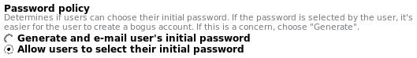
Now, go to "Users and Groups Administration" (still in "Site setup") and add the following users using the button "add new user" (do not check "Send a mail with the password" and enter a dummy email):
| User Name | Password |
|---|---|
| sydney | sydney |
| ludovic | ludovic |
Now, we need groups. Guess what? We will not create groups. Why? Because gen will generate groups automatically for you!
Now that we have users and groups, it is time to create roles. Guess what? We will not do it. Why? Because it is simply not needed. gen will scan your code and find every role you mention and will create them automatically at the Zope/Plone level if they do not exist yet. We will use the following roles:
| role name | description |
|---|---|
| ZManager | Manager in our company that creates Zope components |
| ZLeader | Project leader in our company |
| ZDeveloper | Zope/Python developer |
gen will create one group for every role defined in your application; the group will be granted only the corresponding role. Note that we will probably not use the role ZDeveloper. Indeed, developers work. They will probably not use a management tool. Now, let's tackle permissions. Again, it is not needed to create permissions (at least now): gen provides the following default permissions:
| name | corresponding code object | description |
|---|---|---|
| create | - | Permission to create an object |
| read | appy.gen.r | Permission to access/view the content (=field values) of an object |
| write | appy.gen.w | Permission to edit/modify the content (=field values) of an object |
| delete | appy.gen.d | Permission to delete an object |
All the security ingredients are now ready (users, groups, roles and permissions): we will now see how to use them to define security on a gen-application.
Permission to create objects is done at 2 levels. First, you may define a global list of roles that will, by default, be allowed to create any object of any class in your gen-application. In our company, ZLeaders are responsible for creating Zope components. You declare this global list in attribute defaultCreators of your appy.gen.Config instance introduced while presenting i18n:
c = Config()
c.languages = ('en', 'fr')
c.defaultCreators += ['ZLeader']
Why do I write += and not = ? Because the defaultCreators attribute is already initialised with this list of default Plone roles: ['Manager', 'Owner']. Manager is the role granted to any Plone/Zope administrator (like the admin user we have used in our examples so far); Owner is a special role that is granted to the user that created a given object.
Defining default creator roles for every class of your application may not be subtle enough. This is why gen allows you do it per class, with static attribute creators. For example, you may use this attribute on class ZopeComponent:
class ZopeComponent:
...
creators = c.defaultCreators + ['ZLeader']
With this piece of code, Managers and ZLeaders will be able to create ZopeComponents; only Managers will be able to create instances of other classes in your application (provided no specific creators attribute is defined on them). Note that the creators attribute infringes the classical rules of class inheritance: If you have non abstract classes A and B(A), defining attribute creators on A will have absolutely no effect on B.
For granting all other permissions (like read, write and delete, in short r, w, d), we will not use the same approach as for the create permission. Indeed, the permissions-to-roles mapping for a given object may depend on its state. For example, at some point in the object's life, we would like some users to be able to edit it; after a while (once the object has been validated by a manager, for example), we would like to prevent further modifications (at least for persons having certain roles). This is why we will use the concept of workflow as provided by Zope and Plone. This concept is simple: for a given gen-class, you may define several states (like "created", "validated", "ongoing" or whatever you want); for every state, you define a permissions-to-role mapping (while an object is in this state, what roles are granted what permissions on that object?). Finally, you need to decide what will be the initial state of the object and what are the valid state changes (= transitions).
Workflows are defined on a per-class basis. At present, if you don't define any workflow for one of your gen-classes, a default workflow provided by Plone will be used. As Plone is not really made for building web applications, this workflow will probably not be relevant for your class (it is a workflow for publishing web pages on a collaborative web site, with states like "under creation", "under validation" or "published"). In future gen releases, I will probably add an attribute defaultWorkflow in the Config instance and even provide some kind of web-application-minded default workflow (with some states like "active" and "inactive"). Hey I realize that it is useful to write documentation! It forces you to explore in a systematic way every aspect of the thing you have developed! Is it the birth of a new quality paradigm? Beuaaahhrk: I have written the word "quality".
So let's define a simple workflow for our class ZopeComponent. Until now our class looks like this:
class ZopeComponent:
root = True
def showDate(self):
return True
def validateDescription(self, value):
res = True
if value.find('simple') != -1:
res = self.translate('zope_3_is_not_simple')
return res
description = String(editDefault=True)
technicalDescription = String(format=String.XHTML,
validator=validateDescription)
status = String(validator=['underDevelopement', 'stillSomeWorkToPerform',
'weAreAlmostFinished', 'alphaReleaseIsBugged', 'whereIsTheClient'],
optional=True, editDefault=True)
funeralDate = Date(optional=True)
responsibleBunch = Ref(BunchOfGeek, multiplicity=(1,1), add=False,
link=True, back=Ref(attribute='components'))
Field status seems to be a kind of workflow embryo. So we will remove it and create a workflow whose states will look like values of this field:
class ZopeComponentWorkflow:
# Roles
zManager = 'ZManager'
zLeader = 'ZLeader'
managerM = (zManager, 'Manager')
leaderM = (zLeader, 'Manager')
everybody = (zManager, zLeader, 'Manager')
# States
created = State({r:leaderM, w:leaderM, d:leaderM}, initial=True)
validated = State({r:everybody, w:everybody, d:None})
underDevelopment = State({r:everybody, w:leaderM, d:None})
whereIsTheClient = State({r:everybody, w:managerM, d:None})
# Transitions
validate = Transition( (created, validated), condition=managerM )
startDevelopment = Transition( (validated, underDevelopment),
condition=leaderM)
cancelDevelopment = Transition( (underDevelopment, whereIsTheClient),
condition=managerM)
cancel = Transition( ( (whereIsTheClient, underDevelopment),
(underDevelopment, validated),
(validated, created)), condition='Manager')
class ZopeComponent:
...
workflow = ZopeComponentWorkflow
...
21 lines of code for the workflow ! (including 3 lines of comments and several lines splitted because of this silly 80-characters-length constraint). Sorry, the states do not correspond exactly to the values of the removed status field; this is because I felt myself guilty about being so ironic.
Like gen-classes, gen-workflows do not inherit from any base class provided by gen. Simply, static fields are instances of classes provided by gen like appy.gen.State and appy.gen.Transition. gen will decide if your class is a gen-class or a gen-workflow by analysing its static attributes. So please avoid creating hybrid classes mixing field definitions (String, Ref, etc) and workflow definitions (State, Transition, etc).
As shown in the last lines of the example, associating a gen-workflow to a gen-class is done through the workflow attribute of a gen-class. The same workflow may be associated to different gen-classes. A gen-class defining no workflow inherits from a potential workflow association defined on a parent.
Let's analyse the workflow in itself. We begin by putting some roles in variables. It is not really necessary (this is not a role "registration" at all); I do it in order to avoid writing syntax errors within role names because it would lead to the creation of silly roles.
Then, we have the definitions of states. The first paramater is the permissions-to-roles mapping, that indicates, for every permission defined on the associated class, what role(s) have the permission. This parameter is a dictionary whose keys are permissions (remember that r, w, and d correspond to read, write and delete permissions; I can use them as is because of the clause from appy.gen import *) and whose values are, as suggested by the example, either a tuple/list of roles, a single role, or None. For example, when the component is underDevelopment, only project leaders (and administrators) may modify them; when it is in state whereIsTheClient, only managers (and administrators) may edit them. As soon as a component is validated, nobody may delete it: permission d is granted to None (=nobody). The parameter initial=True indicates that the first state is the one the object gets as soon as it is created. Avoid specifying this for more than one state.
Definitions of transitions are based on state definitions. Indeed, when defining a transition, the first parameter is a 2-tuple (startState, endState). So a transition is simply a specified way to go to from one state to the other. Additional parameter condition specifies under what circumstances the transition may be "triggered". In the example, only persons having roles Manager or ZManager are allowed to trigger transition validate, that will change object state from created to validated. It is also possible to define multi-transitions, which are transitions having multiple 2-tuples (startState, endState) (grouped in one big tuple) like transition cancel. Multi-transitions may be seen as a shortcut that allows you to write several similar transitions in only one. In the example, cancel transitions are used to "go backward", if a user triggered a transition by error.
Such a workflow is called a state machine. The following diagram represents the workflow defined above.
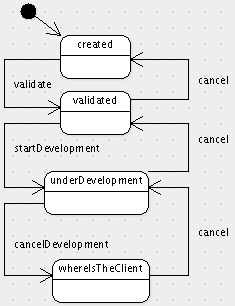
Other frameworks allow you to define your workflows this way, with tools like ArgoUML. This is the case for ArchGenXML for example. I have been a ArchGenXML user for 2 years, and this is why I decided to create a code-based approach for defining workflows in gen. Why? As already mentioned, working with a UML model gives you an additional dependency (towards a tool and a format), prevents collaborative work, cut & paste or more powerful subtleties like multi-transitions or workflow inheritance (see below). Moreover, a model is (when you compare it with code) a much poorer way to describe things. It abstracts a lot of "details", that you are forced to add in an unnatural way (like defining permissions-to-roles mappings in UML tagged values that you can't represent on the diagram), or, worse, that you can't simply put in the model (like the actions triggered by the workflow or specific conditions that you define with Python methods, like explained hereafter). The conclusion is: when using a model approach, you are always forced to complete it with a code approach (this is what happens typically with ArchGenXML: specific actions and conditions are written in additional Python scripts. It implies spreading and duplicating information about the workflow, augmenting complexity and the maintainability effort. That said, diagrams may represent a good way to communicate your ideas. This is why we plan to integrate in future gen releases the possibility to generate diagrams from gen-workflows and gen-classes.
In order to see our workflow at work, we need to perform a last action: granting roles to our users. Because gen managed automatically groups, roles, and their links, the only action we need to perform is to put sidney and ludovic in the right groups.
Re-generate your product, restart Zope, go to "Site setup", re-install your Plone product, go to "Site setup" -> "Users and Groups Administration" and click on tab "groups". You will get this screen:
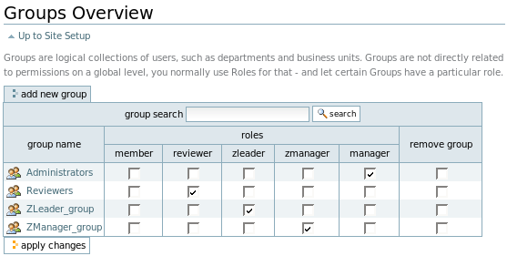
Groups "Administrators" and "Reviewers" are default Plone groups. Your gen-application has added groups "ZManager_group" and "ZLeader_group": each one has the corresponding role. Click on "ZManager_group": there is nobody in it. Click on "show all": Ludovic and Sidney appear. Check the checkbox besides Sydney and add her to the group. In a similar way, add Ludovic to group "ZLeader_group".
We will first walk through the application as user admin, as usual. According to the workflow, admin, as Manager, is God: he can do everything. Besides this pleasant feeling, it will allow us to trigger all workflow transitions.
Because role Manager may add ZopeComponent instances (thanks to Config.defaultCreators), on the dashboard, the "plus" icon is available in tab "Zope component". Create a new Zope component: the consult view will look like this:
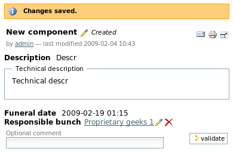
Besides the component title, its state appears (here: "Created"). According to the workflow, the only possible transition to trigger from this state is validate; as Manager I have the right to trigger it, so the corresponding button appears on the bottom of the page. Please enter a nice comment in the field and click on button "validate": the component will go in state validated as dictated by the workflow. The consult view has now evolved accordingly:
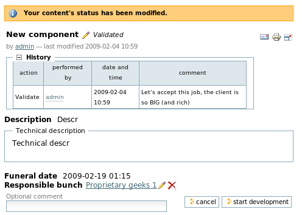
Component state is now "Validated". I have expanded the plus icon "History": all workflow actions triggered on the component appear in a table, with the (optional) comments entered by the triggering user(s). Again, according to the workflow, 2 actions may now be triggered, and I have te rights to trigger both: 2 new buttons appear... I guess you understand now how the workflow works: try now by yourself, walk through the state machine by triggering available actions and see how the history evolves.
The following screenshot shows how the dashboard may evolve according to permissions:
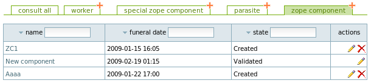
Because the workflow says that nobody may delete Zope components once they are validated, the delete icon is not available for component named "New component". By the way, you can display the workflow state in the dashboard: go to the corresponding flavour, click on tab "user interface" and, for class ZopeComponent, select "workflow state" in field "Columns to display while showing query results".
Now, please log out (a link is available in the top-right corner, within the blue strip) and log in as ludovic. Because ZLeaders are among default creators, as Ludovic we may create a new Zope component. If you do so, you will then get a consult view like this one:
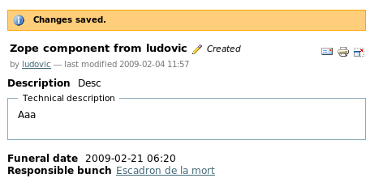
No workflow action is shown because Ludovic has not the right to validate the component. Reconnect now as Sidney. First of all, let's view the dashboard as it is shown to her:
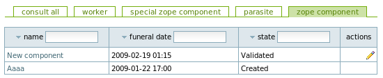
Sidney is not among ZopeComponent creators, so the "plus" icon is not shown in the corresponding tab. Moreover, according to the workflow, she does not have the right to modify components in state "Created": the "pen" icon is not available for component "Aaaa". But if you go to the consult view for this component, Sidney will be able to validate it:
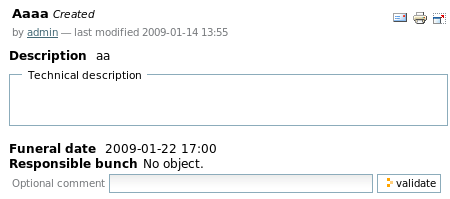
We have now finished our first security tour. An important remark is that we have granted roles "globally" to groups: any user of the group has always the globally granted role, under all circumstances, on any related object in your gen-application. In our example, Ludovic and all potential other project leaders have the right to edit all created components. This may not be the desired behaviour. Maybe would you prefer any project leader to be able to edit his own components but not components created by other project leaders. This is where "local roles" come into play. A local role is a role that a user or group has, but only on a given object. The default Plone role "Owner" is an example of local role: this is not a role that you grant "globally" to a user or group (like the ones shown in tab "groups" or "users" of "Site setup -> Users and Groups Administration"); this is a role that is granted on an object to the user that created it. You may of course reference local roles within gen-workflows. For example, if you want to restrict component modifications to Owners and Managers when the component is created, you may modify the workflow state created like this:
created = State({r:leaderM, w:('Owner', 'Manager'), d:leaderM}, initial=True)
Re-generate your product and re-install it. The Plone procedure for re-installing a product updates the workflow definition but does not update the permissions-to-roles mappings defined on existing objects. In order to synchronize them with the new workflow definition, you need to go, through the ZMI, in object "portal_workflow" within your Plone site. At the bottom of the page, you will find a button "Update security settings". Click on it. This may take a long time if you have a large number of objects in your database. In future gen releases, you will be able to re-install your product directly from your tool. This specific procedure will ask you if you want to "Update workflow settings on existing objects" or not.
Now, log in as Ludovic. Consider the following dashboard as seen by him:
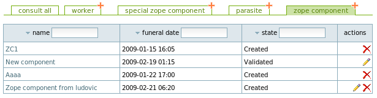
Components "ZC1" and "Aaaa" were created by admin: Ludovic may not edit them. He can only edit the one he has created itself (= the last one in the table).
In future gen releases, you will be able to define and manage "custom" local roles.
Until now, we have seen that, as transition condition, you can specify role(s) (one, as a string, or a tuple of roles). You can also specify Python method(s) the same way, and even mix roles and Python methods. Specified Python method(s) must belong to your gen-workflow (or one of its parents, yes, we will soon talk about workflow inheritance!). With such methods, more complex conditions may be defined. Let's show it by refining our previous example. Suppose that components can be validated only if a funeral date (which is not a mandatory field) has been specified. Transition validate need to evolve:
class ZopeComponentWorkflow:
...
def funeralOk(self, obj): return obj.funeralDate
validate = Transition( (created, validated), condition=managerM + (funeralOk,))
...
It means that beyond having one of the roles defined in managerM, method funeralOk must also return True (or an equivalent value) as prerequisite for triggering transition validate. This kind of method takes a single parameter: the related object. In short: a transition may be triggered if the user has at least one of the roles specified and all specified methods return True. So gen computes an or-operator on roles and an and-operator on methods.
One may also define action(s) (as Python method(s)) that are executed after any transition has been triggered. Let's suppose we want to reinitialise the component description when we start its development. This is completely silly of course. But I like to force you doing silly things, it is a pleasant feeling. So let's update transition startDevelopment:
class ZopeComponentWorkflow:
...
def updateDescription(self, obj):
obj.description = 'Description edited by my manager was silly.'
startDevelopment = Transition( (validated, underDevelopment),
condition=leaderM, action=updateDescription)
...
We have specified a Python method in a new parameter named action. Now, try to click on button "startDevelopment" and you will see the description changing. As for conditions, actions need to be Python methods defined on the gen-workflow or one of its parents. Those methods take only one parameter: the related object. As already announced, the action parameter may also take a list or tuple of methods instead of a single method.
Until now, we have considered security as an homogeneous layer encompassing a whole gen-class: when someone may read or write objects of a gen-class, she may read or write any field on this object. In some cases, though, we may need to be more subtle, and define specific read or write permissions on individual fields. As already mentioned, this can be done at the time of field definition, with boolean parameters specificReadPermission and specificWritePermission. For every field for which you do not declare using a specific read or write permission, the gen-class-wide read or write permission will come into play for protecting it.
Let's try it on our class ZopeComponent. Suppose we need a specific write permission on field funeralDate and a specific read permission on field responsibleBunch:
class ZopeComponent:
...
funeralDate = Date(optional=True, specificWritePermission=True)
responsibleBunch = Ref(BunchOfGeek, multiplicity=(1,1), add=False,
link=True, back=Ref(attribute='components'),
specificReadPermission=True)
...
Now, in our workflow, for every state, we need to update the permissions-to-roles mapping by specifying the roles that will be granted those 2 new permissions. But first, we need a way to designate those permissions. This is done by using classes appy.gen.ReadPermission and appy.gen.WritePermission like this:
class ZopeComponentWorkflow:
# Specific permissions
wf = WritePermission('ZopeComponent.funeralDate')
rb = ReadPermission('ZopeComponent.responsibleBunch')
# Roles
...
When constructing a WritePermission or ReadPermission instance, you give as parameter the "path name" of the field on which the corresponding specific permission was defined. Within this "path name", you find the name of the class where the field is defined (ZopeComponent in the example). If the workflow class and the field class are in the same package (like, in our case, ZopeComponentWorkflow and ZopeComponent), you can specify the "relative" class name of the field class (without prefixing it with the package name, ie ZopeComponent). Else, you need to specify the full package name of the class (ie ZopeComponent.ZopeComponent.funeralDate).
Now let's update every state definition by integrating those 2 permissions in the permissions-to-roles mappings:
class ZopeComponentWorkflow:
...
# States
created = State({r:leaderM, w:('Owner', 'Manager'), d:leaderM, wf:'Owner', rb:everybody}, initial=True)
validated = State({r:everybody, w:everybody, d:None, wf:everybody, rb:everybody})
underDevelopment = State({r:everybody, w:leaderM, d:None, wf:leaderM, rb:everybody})
whereIsTheClient = State({r:everybody, w:managerM, d:None, wf:managerM, rb:everybody})
...
Now, re-generate your product, restart Zope and re-install the product, update the security settings on portal_workflow and try, as admin, to edit a component that is in state created and was created by Ludovic. Because Managers have the right to modify components in this state, you will be able to get the edit view. But on this view, because you do not have the specific "edit" permission on field funeralDate (you are not the component Owner), the field will not show up:
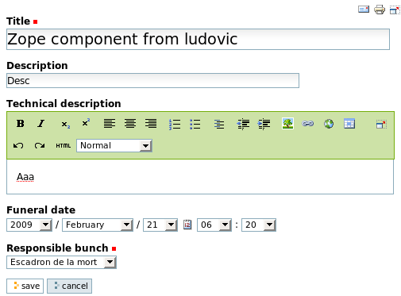
Aaaaargh! The field is visible! Impossible! How can user admin bypass our security like this? This is the occasion to learn something about local roles: they propagate from a given object to its contained objects. Remember that Zope components, as root objects, are stored in a folder within the Plone site. This folder was created by the generated Plone product with the admin user: so admin has local role Owner on it (and, by the way, has local role Owner on the Plone site as well). It means that admin will have role Owner on all sub-objects of your Plone site. When you think about this, it is normal: admin is God (and you are admin).
In order to produce a working example, let's create a new user (let's call it gerard) and grant him role Manager. This way, we will get a Manager that is not Owner of all objects. Log in as gerard, and go the previous edit view:
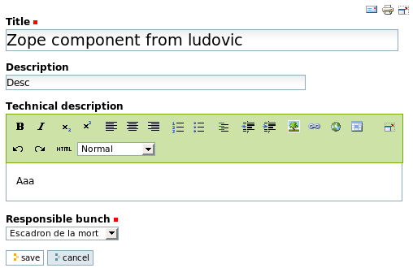
Yes! You do not see (so you can't edit) field funeralDate. Consult views (or dashboards) will behave similarly with read permissions: fields for which the currently logged user have no read permission will be invisible. Note that if you don't have the whole-gen-class read (write) permission, and you have a read (write) permission on one of its fields, you will not be allowed to read (write) the specific field.
For the moment, for every state definition, you are forced to specify a permissions-to-roles mapping that includes all related permissions (class-wide and field-specific). In future gen releases, this will change. We will implement things like: if you don't specify roles for a specific read (write) field-permission, it will take the value from the corresponding read (write) class-wide permission; unspecified values may also be copied from the previous state definition, etc. This way, as usual, you will continue to be as lazy and concise as possible while writing gen-applications.
With gen, workflows are Python classes. This allows us to benefit from class inheritance and apply it to workflows. Our company that creates Zope components is now used to heavy technologies. They got a business revelation: some managers discovered that COBOL and Zope 3 had a lot in common on both philosophical and technical points of view. So they decided to begin creating components in COBOL. They were so excited about it that they needed to update their management software as quickly as possible. So a new class was added for registering information about COBOL components. The associated workflow was almost similar to the existing ZopeComponentWorkflow; a new workflow inheriting from it was created:
class CobolComponentWorkflow(ZopeComponentWorkflow):
p = ZopeComponentWorkflow # Shortcut to workflow parent
# An additional state
finished = State(p.whereIsTheClient.permissions)
# Override validate: condition on funeralDate has no sense here
validate = Transition(p.validate.states, condition=p.managerM)
# Override cancelDevelopment: go to finished instead
cancelDevelopment = Transition( (p.underDevelopment, finished),
condition=p.managerM)
# Update cancel accordingly
cancel = Transition( ((finished, p.underDevelopment),) +p.cancel.states[1:],
condition=p.cancel.condition)
class CobolComponent:
root = True
workflow = CobolComponentWorkflow
description = String()
Basically, this new workflow "removes" state whereIsTheClient, creates a more optimistic end state finished and performs some surgical operations on transitions for reflecting navigation to and from the new state. For defining it, we reuse the permissions-to-roles mapping that was defined on state whereIsTheClient. Then, we have overridden transition validate because the condition that related to field funeralDate is not relevant anymore (COBOL components have no funeral date). Transition cancelDevelopment was also overridden: the end state is not whereIsTheClient anymore, but finished instead. We also need to override transition cancel for updating the tuple of (startState, endState).
And we are done! You may now test the result. As for classical inheritance, it is not really possible to remove elements in a child class. So state whereIsTheClient is still there, but unreachable because of our operations on transitions (so it is more or less the same as a deletion). Workflow inheritance ensures reuse and conciseness: any element that does not change from ZopeComponentWorkflow is kept in the child workflow; any change made in the reused part of the parent workflow will automatically impact the child workflow(s).
As usual, for every workflow state and transition, i18n labels have been automatically generated (in the plone domain), together with a "nice" default value. The format of those labels is defined here. There is still a small problem with the CobolComponentWorkflow: the transition for finishing the work is called cancelDevelopment. I am too lazy for creating another transition, so I will simply modify here the translation of this transition in the corresponding i18n file (=ZopeComponent-plone-en.po in this case):
#. Default: "Cancel development"
msgid "zopecomponent_cobolcomponentworkflow_cancelDevelopment"
msgstr "Finish"
Note that i18n labels are "duplicated" for every child workflow. Here, I modify label zopecomponent_cobolcomponentworkflow_cancelDevelopment without perturbing parent label for the same transition which is zopecomponent_zopecomponentworkflow_cancelDevelopment.